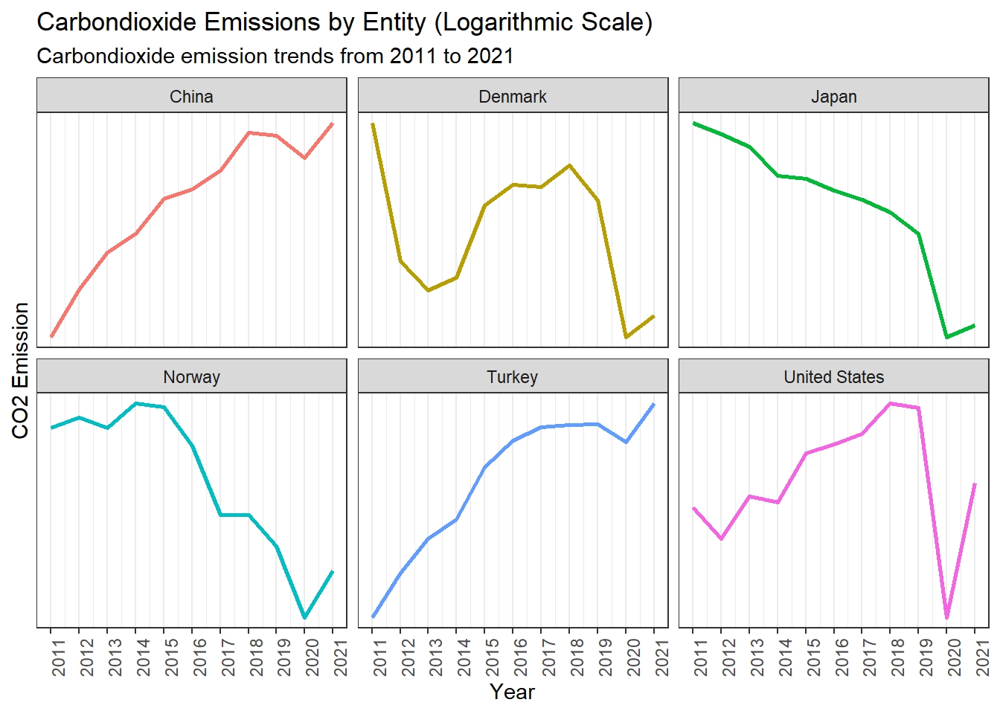
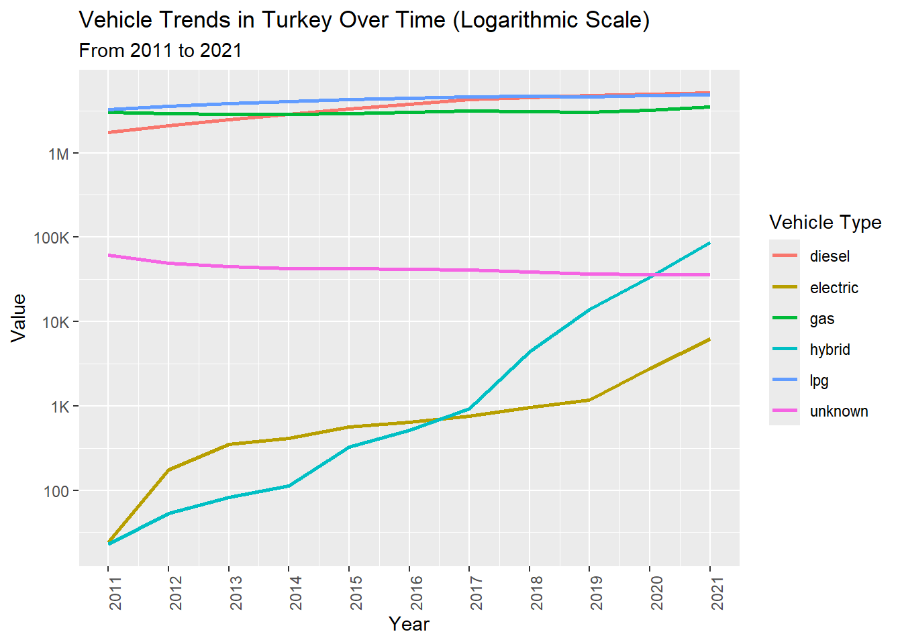
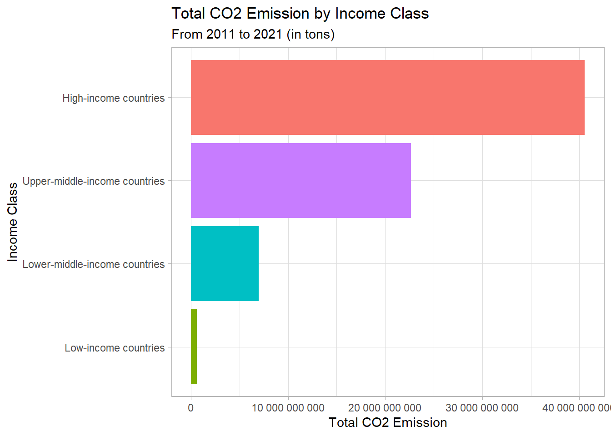

Code
library(dplyr)
library(ggplot2)
library(tidyr)
library(scales)
library(readr)
library(readxl)
library(ggthemes)
library(forcats)library(dplyr)
library(ggplot2)
library(tidyr)
library(scales)
library(readr)
library(readxl)
library(ggthemes)
library(forcats)In this part of analysing, my_data3 will be using. Therefore, here is the general information that’s needed:
str(my_data3)'data.frame': 2232 obs. of 4 variables:
$ entity : chr "Afghanistan" "Africa" "Albania" "Algeria" ...
$ code : chr "AFG" "" "ALB" "DZA" ...
$ year : int 2011 2011 2011 2011 2011 2011 2011 2011 2011 2011 ...
$ transport_co2_emissions: num 6.71e+06 2.68e+08 2.36e+06 3.42e+07 6.28e+06 ...entity: A character column in my_data3 data set which represents the countries, continents, some income levels and the world.
code: A character column in my_data3 data set which represents the codes of the countries. (There are no codes for noncountries)
year: An integer column in my_data3 data set which represents the year.
transport_co2_emissions: A numeric column in my_data3 data set which represents the total carbon emission in ton.
Final look at the top 20 countries’ mean transportation carbondioxide emission from 2011 to 2021. To do this, entity column of my_data3 has tidied.
non_countries <- c(
"World",
"Upper-middle-income countries",
"Lower-middle-income countries",
"Low-income countries",
"High-income countries",
"European Union (27)",
"Europe",
"Asia",
"Africa",
"North America",
"South America",
"Oceania"
)
mean_co2_emission_by_country <- my_data3 |>
filter(!entity %in% non_countries) |>
group_by(entity) |>
summarize(mean_co2_emission_per_year = mean(transport_co2_emissions, na.rm = TRUE)) |>
mutate(entity_lumped = fct_lump_n(entity, n = 20, w = mean_co2_emission_per_year)) |>
group_by(entity_lumped) |>
summarize(mean_co2_emission_per_year = mean(mean_co2_emission_per_year, na.rm = TRUE), .groups = "drop")
head(mean_co2_emission_by_country)# A tibble: 6 × 2
entity_lumped mean_co2_emission_per_year
<fct> <dbl>
1 Australia 92412727.
2 Brazil 198190000
3 Canada 169276364.
4 China 830712727.
5 France 124309090
6 Germany 154080000 ggplot(mean_co2_emission_by_country, aes(x = reorder(entity_lumped, mean_co2_emission_per_year), y = mean_co2_emission_per_year, fill = entity_lumped)) +
geom_col(width = 0.5) +
scale_y_continuous(labels = label_number(scale = 1, accuracy = 1)) +
coord_flip() +
labs(x = "Country",
y = "Mean CO2 Emission",
title = "Mean CO2 Emission by Country",
subtitle = "From 2011 to 2021 (in tons)") +
theme_light() +
theme(legend.position = "none")
The big majority of mean transportation carbondioxide emissions consisted of top 20 countries.
Scandinavia countries, such as Denmark and Norway, are really worth to analyze their transportation carbondioxide emissions and electric/non-electric EV sales, as they have not listed in the top 20 countries with the largest mean carbondioxide emission level.
Turkey is 19th country with the largest mean transportation carbondioxide emission level.
It’s needed to see the transportation carbondioxide emission levels of countries through the years to get more information about them. Below, the amounts of some of those 20 countries’ (which are chosen specifically by team NRG) transportation carbondioxide emission (in tons) are displayed in the graph with the tidied version of my_data3.
emission_by_country: This is the more tidied version of my_data3.
head(emission_by_country) entity code year transport_co2_emissions
1 China CHN 2011 621890000
2 Denmark DNK 2011 12640000
3 Japan JPN 2011 223030000
4 Norway NOR 2011 14980000
5 Turkey TUR 2011 44000000
6 United States USA 2011 1633590000ggplot(emission_by_country, aes(x = year, y = transport_co2_emissions, color = entity)) +
geom_line(size = 1) +
scale_y_continuous(
trans = "log10",
breaks = c(1, 10, 100, 1000, 10000, 100000, 1000000, 10000000, 100000000, 1000000000, 10000000000),
labels = c("1", "10", "100", "1K", "10K", "100K", "1M", "10M", "100M", "1B", "10B")
) +
scale_x_continuous(breaks = 2011:2021) +
facet_wrap(~ entity) +
labs(x = "Year",
y = "CO2 Emission",
title = "Carbondioxide Emissions by Entity (Logarithmic Scale)",
subtitle = "From 2011 to 2021 (in tons)"
) +
theme_bw() +
theme(legend.position = "none",
axis.text.x = element_text(angle = 90, hjust = 1)) # rotate x-axis labelsWarning: Using `size` aesthetic for lines was deprecated in ggplot2 3.4.0.
ℹ Please use `linewidth` instead.
Here are some observations from this graph:
It can be observed that there is a persistent increase in the carbondioxide emission levels in Turkey and China. China is very close to emit one billion tons of carbondioxide.
Denmark has decreased its carbondioxide emission level after a 10-year horizon. Japan and Norway has a considerable decreasing trend in its carbondioxide emission level.
USA has the highest carbondioxide emission compared to others, exceeding one billion tons of carbondioxide.
This graph compares those 6 countries very well, but it’s not possible to see the trends for each of them. Therefore, the line plot below has been made to display the trend in the transportation carbondioxide emission levels of those exactly same countries to make a comparison.
top6_countries <- c("United States", "Norway", "Denmark", "China", "Japan", "Turkey")
emission_by_country <- my_data3 |>
filter(entity %in% top6_countries)
head(emission_by_country) entity code year transport_co2_emissions
1 China CHN 2011 621890000
2 Denmark DNK 2011 12640000
3 Japan JPN 2011 223030000
4 Norway NOR 2011 14980000
5 Turkey TUR 2011 44000000
6 United States USA 2011 1633590000ggplot(emission_by_country, aes(x = year, y = transport_co2_emissions, color = entity)) +
geom_line(size = 1) +
scale_y_continuous(
trans = "log10",
breaks = c(1, 10, 100, 1000, 10000, 100000, 1000000, 10000000, 100000000, 1000000000, 10000000000),
labels = c("1", "10", "100", "1K", "10K", "100K", "1M", "10M", "100M", "1B", "10B")
) +
scale_x_continuous(breaks = 2011:2021) +
facet_wrap(~ entity, scale = "free_y") +
labs(x = "Year",
y = "CO2 Emission",
title = "Carbondioxide Emissions by Entity (Logarithmic Scale)",
subtitle = "Carbondioxide emission trends from 2011 to 2021"
) +
theme_bw() +
theme(legend.position = "none",
axis.text.x = element_text(angle = 90, hjust = 1)) # rotate x-axis labels
Here are some observations from this graph:
It can be observed that China’s, USA’s and Turkey’s total transportation carbondioxide emission level have an increasing trend over years while Denmark’s, Norway’s and Japan’s have a decreasing trend.
All of the countries have a clear reduction of total transportation carbondioxide emission level in 2020. This is the effect of COVID-19 pandemic which causes a v-shaped pattern for all countries listed.
This graphs gives a lot information about transportation carbondioxide emission levels of those countries. But is it correct to make a decision from only these graphs? May population be the reason of some countries’ low/high total transportation carbondioxide emission levels? Let’s analyse it with the graph seen below.
BURAYA GELECEK TOLKAN YAPTIGIN GRAPH
Here are some observations from this graph:
When we analyse the transportation carbon emission per person, even China has the one of the highest total transportation carbondioxide emission, it can be seen that China has the lowest transportation carbondioxide emission per person among all other countries. While USA on the other hand, still has the highest level.
Denmark’s, Norway’s and Japan’s transportation carbon emission per person have a decreasing trend.
Turkey’s transportation carbon emission per person is not high but it has an increasing trend.
The decrease in 2020 can be seen again.
str(my_data2)spc_tbl_ [8,019 × 8] (S3: spec_tbl_df/tbl_df/tbl/data.frame)
$ region : chr [1:8019] "Australia" "Australia" "Australia" "Australia" ...
$ category : chr [1:8019] "Historical" "Historical" "Historical" "Historical" ...
$ parameter : chr [1:8019] "EV stock share" "EV sales share" "EV sales" "EV stock" ...
$ mode : chr [1:8019] "Cars" "Cars" "Cars" "Cars" ...
$ powertrain: chr [1:8019] "EV" "EV" "BEV" "BEV" ...
$ year : num [1:8019] 2011 2011 2011 2011 2011 ...
$ unit : chr [1:8019] "percent" "percent" "Vehicles" "Vehicles" ...
$ value : num [1:8019] 3.9e-04 6.5e-03 4.9e+01 4.9e+01 2.2e-02 ...
- attr(*, "spec")=
.. cols(
.. region = col_character(),
.. category = col_character(),
.. parameter = col_character(),
.. mode = col_character(),
.. powertrain = col_character(),
.. year = col_double(),
.. unit = col_character(),
.. value = col_double()
.. )
- attr(*, "problems")=<externalptr> region: A character column in my_data2 data set which represents the countries and the world.
category: A character column in my_data2 data set which represents how the data has collected.
parameter: A character column in my_data2 data set which represents the parameter of the data collected.
mode: A character column in my_data2 data set which represents the vehicle types.
powertrain: A character column in my_data2 data set which represents how the vehicle gets its power from, a.k.a. type of the powertrain that the vehicle uses which are EV, BEV, PHEV etc.
year: A numeric column in my_data2 data set which represents the year.
unit: A character column in my_data2 data set which represents the unit that is used.
value: A numeric column in my_data2 data set which represents the amount of the vehicles in unit.
##Sales of No Carbon Vehicles
What about the countries’ adoption on EV’s? To be able to understand the relation between EV sales and transportation, my_data2 is used. The same countries are filtered from it.
The types of EV’s are summarized below.
BEV and FCEV sales are analysed since they’re the no carbon ones.
my_data2$region[my_data2$region == "Turkiye"] <- "Turkey"
top6_countries = c("USA", "Norway", "Denmark", "China", "Japan", "Turkey")
no_carbon = c("BEV", "FCEV")
top6_ev_sales <- my_data2 |>
filter(region %in% top6_countries, parameter == "EV sales", powertrain %in% no_carbon)
top6_ev_sales |> mutate(value = as.numeric(format(value, scientific = FALSE)))# A tibble: 276 × 8
region category parameter mode powertrain year unit value
<chr> <chr> <chr> <chr> <chr> <dbl> <chr> <dbl>
1 China Historical EV sales Buses BEV 2011 Vehicles 440
2 China Historical EV sales Vans BEV 2011 Vehicles 150
3 China Historical EV sales Cars BEV 2011 Vehicles 4800
4 Denmark Historical EV sales Vans BEV 2011 Vehicles 23
5 Denmark Historical EV sales Cars BEV 2011 Vehicles 420
6 Denmark Historical EV sales Buses BEV 2011 Vehicles 1
7 Japan Historical EV sales Cars BEV 2011 Vehicles 13000
8 Japan Historical EV sales Buses BEV 2011 Vehicles 2
9 Japan Historical EV sales Vans BEV 2011 Vehicles 850
10 Norway Historical EV sales Vans BEV 2011 Vehicles 42
# ℹ 266 more rowshead(top6_ev_sales)# A tibble: 6 × 8
region category parameter mode powertrain year unit value
<chr> <chr> <chr> <chr> <chr> <dbl> <chr> <dbl>
1 China Historical EV sales Buses BEV 2011 Vehicles 440
2 China Historical EV sales Vans BEV 2011 Vehicles 150
3 China Historical EV sales Cars BEV 2011 Vehicles 4800
4 Denmark Historical EV sales Vans BEV 2011 Vehicles 23
5 Denmark Historical EV sales Cars BEV 2011 Vehicles 420
6 Denmark Historical EV sales Buses BEV 2011 Vehicles 1top6_ev_sales |> group_by(year, region, powertrain) |>
summarize(total_sales = sum(value, na.rm = TRUE), .groups = "drop") |>
ggplot(aes(x = year, y = total_sales, color = region, linetype = powertrain)) +
geom_line(size = 1) +
scale_x_continuous(breaks = 2011:2021) +
scale_y_continuous(trans = "log10",
labels = label_number(scale = 1, accuracy = 1)
) +
labs(x = "Year",
y = "Sales",
title = "Sales of No Carbon Vehicles (Logarithmic Scale)",
subtitle = "The behaviour of the number of sales of vehicles that emit no carbon over time",
color = "Region",
linetype = "Powertrain Type"
) +
facet_wrap(~ region) +
theme_light() +
theme(axis.text.x = element_text(angle = 90, hjust = 1)) + # rotate x-axis labels
guides(color = "none") # remove the region legend
top6_ev_sales# A tibble: 276 × 8
region category parameter mode powertrain year unit value
<chr> <chr> <chr> <chr> <chr> <dbl> <chr> <dbl>
1 China Historical EV sales Buses BEV 2011 Vehicles 440
2 China Historical EV sales Vans BEV 2011 Vehicles 150
3 China Historical EV sales Cars BEV 2011 Vehicles 4800
4 Denmark Historical EV sales Vans BEV 2011 Vehicles 23
5 Denmark Historical EV sales Cars BEV 2011 Vehicles 420
6 Denmark Historical EV sales Buses BEV 2011 Vehicles 1
7 Japan Historical EV sales Cars BEV 2011 Vehicles 13000
8 Japan Historical EV sales Buses BEV 2011 Vehicles 2
9 Japan Historical EV sales Vans BEV 2011 Vehicles 850
10 Norway Historical EV sales Vans BEV 2011 Vehicles 42
# ℹ 266 more rowsHere are some observations from this graph and the graphs before:
All countries in the plot increased their non-carbon emitting vehicle sales after 10-year horizon. However, Turkey has not been adopted FCEV’s through 2021 while the other countries are using FCEV’s more year by year. China has started using FCEV’s (in 2016) later than the others (in 2011-2014). It can be also observed that BEV sales has started 2012 in Turkey.
China has increased its BEV and FCEV sales more than any other country, however from the last analyses we know that it couldn’t make any big difference in total transportation carbondioxide emission since it’s population is too high. On the other hand in Norway and Denmark, BEVs and FCEVs has a positive effect on total transportation carbondioxide emission since their populations are much lower than China.
It seems like Japan didn’t increase the sales of BEVs and FCEVs, yet they managed to decrease the total transportation carbondioxide emission, which means they did some other applications.
str(my_data4)tibble [11 × 15] (S3: tbl_df/tbl/data.frame)
$ year : chr [1:11] "2011" "2012" "2013" "2014" ...
$ total : chr [1:11] "8113111" "8648875" "9283923" "9857915" ...
$ percentage_total : chr [1:11] "100" "100" "100.00000000000001" "100.00000000000001" ...
$ gas : chr [1:11] "3036129" "2929216" "2888610" "2855078" ...
$ percentage_gas : chr [1:11] "37.422500444034348" "33.868173606393896" "31.114109843435799" "28.962290707517766" ...
$ diesel : chr [1:11] "1756034" "2101206" "2497209" "2882885" ...
$ percentage_diesel : chr [1:11] "21.644397568331065" "24.294558540850687" "26.898208871400591" "29.244368611415293" ...
$ lpg : chr [1:11] "3259288" "3569143" "3852336" "4076730" ...
$ percentage_lpg : chr [1:11] "40.173097594745101" "41.267135899177639" "41.494700031441454" "41.354890968323424" ...
$ hybrid : chr [1:11] "23" "53" "83" "113" ...
$ percentage_hybrid : chr [1:11] "0.00028349174564479642" "0.00061279646196759697" "0.00089401861691442287" "0.0011462870191110393" ...
$ electric : chr [1:11] "24" "175" "353" "412" ...
$ percentage_electric: chr [1:11] "0.00029581747371630932" "0.0020233845442326312" "0.0038022719490456778" "0.0041793827599446737" ...
$ unknown : chr [1:11] "61613" "49082" "45332" "42697" ...
$ percentage_unknown : chr [1:11] "0.75942508367012351" "0.56749577257157724" "0.48828496315620024" "0.43312404296446055" ...year: A character column in my_data4 data set which represents the year.
total: A character column in my_data4 data set which represents the total number of vehicles that are on traffic.
percentage_total: A character column which represents the total number of vehicles over total number of vehicles.
gas: A column in my_data4 data set which represents the vehicles which operates with gas.
percentage_gas: A character column which represents the number of vehicles that uses gas over total number of vehicles.
diesel: A column in my_data4 data set which represents the vehicles which operates with diesel.
percentage_diesel: A character column which represents the number of vehicles that are diesel over total number of vehicles.
lpg: A column in my_data4 data set which represents the vehicles which operates with LPG.
percentage_lpg: A character column which represents the number of vehicles that uses lpg over total number of vehicles.
hybrid: A column in my_data4 data set which represents the vehicles which operates with hybrid.
percentage_hybrid: A character column which represents the number of vehicles that are hybrid over total number of vehicles.
electric: A column in my_data4 data set which represents the vehicles which operates with electric.
percentage_electric: A character column which represents the number of vehicles that uses electric over total number of vehicles.
unknown: A column in my_data4 data set which represents the vehicles which operates with unknown power.
percentage_unknown: A character column which represents the number of vehicles that are unknown over total number of vehicles.
How about the adoption of EVs and the others in Turkey? In this part of analysing, my_data4 will be using.
tr_vehicle_num <- my_data4 |>
mutate(across(everything(), as.numeric)) |>
select(-starts_with("percentage"))
tr_vehicle_num_long <- tr_vehicle_num |>
pivot_longer(
cols = c(gas, diesel, lpg, hybrid, electric, unknown),
names_to = "vehicle_type",
values_to = "value"
)
head(tr_vehicle_num_long)# A tibble: 6 × 4
year total vehicle_type value
<dbl> <dbl> <chr> <dbl>
1 2011 8113111 gas 3036129
2 2011 8113111 diesel 1756034
3 2011 8113111 lpg 3259288
4 2011 8113111 hybrid 23
5 2011 8113111 electric 24
6 2011 8113111 unknown 61613These are provided in the line plot below.

Although there was an increase in EV’s and hybrid vehicles, Turkey’s total transportation carbondioxide emission has increased consistently (information from Country Based Mean Transportation CO2 Emission part) and the effect of COVID-19 pandemic was quite temporary on it.
The cumulative bar plot below displays the proportion of vehicle types over time.
vehicle_prop <- c("percentage_gas", "percentage_diesel", "percentage_lpg", "percentage_hybrid", "percentage_electric", "percentage_unknown")
tr_vehicle_perc_long <- my_data4 |>
pivot_longer(cols = vehicle_prop, names_to = "vehicle_type", values_to = "percentage") |>
select(year, vehicle_type, starts_with("percentage"))Warning: Using an external vector in selections was deprecated in tidyselect 1.1.0.
ℹ Please use `all_of()` or `any_of()` instead.
# Was:
data %>% select(vehicle_prop)
# Now:
data %>% select(all_of(vehicle_prop))
See <https://tidyselect.r-lib.org/reference/faq-external-vector.html>.tr_vehicle_perc_long$percentage <- as.numeric(tr_vehicle_perc_long$percentage)
head(tr_vehicle_perc_long)# A tibble: 6 × 4
year vehicle_type percentage_total percentage
<chr> <chr> <chr> <dbl>
1 2011 percentage_gas 100 37.4
2 2011 percentage_diesel 100 21.6
3 2011 percentage_lpg 100 40.2
4 2011 percentage_hybrid 100 0.000283
5 2011 percentage_electric 100 0.000296
6 2011 percentage_unknown 100 0.759 ggplot(tr_vehicle_perc_long, aes(x = year, y = percentage, fill = vehicle_type)) +
geom_bar(stat = "identity", position = "fill", width = 0.8) +
scale_fill_brewer(palette = "Paired") +
labs(x = "Year",
y = "Percentage",
title = "Vehicle Propensity in Turkey Over Time",
subtitle = "From 2011 to 2021"
) +
theme_tufte()
In fact, non-EV’s were still used widely in Turkey, leading to increasing carbondioxide emission levels.
Turkey’s average transportation carbondioxide emission per vehicle is displayed in the line plot below.
tr_emission <- my_data3 |>
filter(entity == "Turkey")
tr_vehicle <- my_data4 |>
select(year, total)
tr_vehicle$year <- as.numeric(tr_vehicle$year)
tr_emission_n_vehicle <- tr_emission |>
left_join(tr_vehicle, by = c("year"))
tr_emission_n_vehicle$total <- as.numeric(tr_emission_n_vehicle$total)
tr_emission_n_vehicle$year <- as.numeric(tr_emission_n_vehicle$year)
head(tr_emission_n_vehicle) entity code year transport_co2_emissions total
1 Turkey TUR 2011 44000000 8113111
2 Turkey TUR 2012 51060000 8648875
3 Turkey TUR 2013 57200000 9283923
4 Turkey TUR 2014 60930000 9857915
5 Turkey TUR 2015 72510000 10589337
6 Turkey TUR 2016 79150000 11317998tr_avg_emission <- tr_emission_n_vehicle |>
mutate(avg_co2_emission_per_vehicle = transport_co2_emissions / total) |>
ggplot(aes(x = year, y = avg_co2_emission_per_vehicle)) +
geom_line(color = "blue", size = 1) +
scale_x_continuous(breaks = 2011:2021) +
geom_vline(xintercept = 2020, color = "black", size = 0.5, linetype = "dashed") +
geom_text(x = 2020, y = 5.5, label = "pandemic", color = "black", vjust = -1) +
labs(x = "Year",
y = "Average CO2 Emission per Year",
title = "Average CO2 Emission Per Vehicle in Turkey (in tons)",
subtitle = "How much carbondioxide does a vehicle emit on the average?"
) +
theme_minimal()
tr_avg_emission
my_data3 has some columns which represents the countries according to their income levels. Therefore, here is the visualization of how the mean carbondioxide emissions has changed by countries’ income level. (Buraya lineplot yapilacak degisiklikler olacak ve eklenen seylerin aciklamalari yazilacak.)
countries_by_income <- c(
"Upper-middle-income countries",
"Lower-middle-income countries",
"Low-income countries",
"High-income countries"
)
total_co2_emission_by_income <- my_data3 |>
filter(entity %in% countries_by_income) |>
rename(income_class = entity) |>
group_by(income_class) |>
summarize(total_co2_income = sum(transport_co2_emissions, na.rm = TRUE))
total_co2_emission_by_income# A tibble: 4 × 2
income_class total_co2_income
<chr> <dbl>
1 High-income countries 40521159900
2 Low-income countries 617290004
3 Lower-middle-income countries 6978670030
4 Upper-middle-income countries 22664189900ggplot(total_co2_emission_by_income, aes(x = reorder(income_class, total_co2_income), y = total_co2_income, fill = income_class)) +
geom_col() +
scale_y_continuous(labels = label_number(scale = 1, accuracy = 1)) +
coord_flip() +
labs(x = "Income Class",
y = "Total CO2 Emission",
title = "Total CO2 Emission by Income Class",
subtitle = "From 2011 to 2021 (in tons)") +
theme_light() +
theme(legend.position = "none")
As expected, the more income levels, the high emission levels that a country would have.